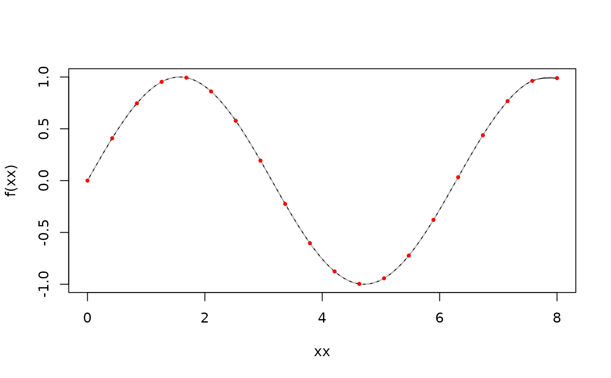
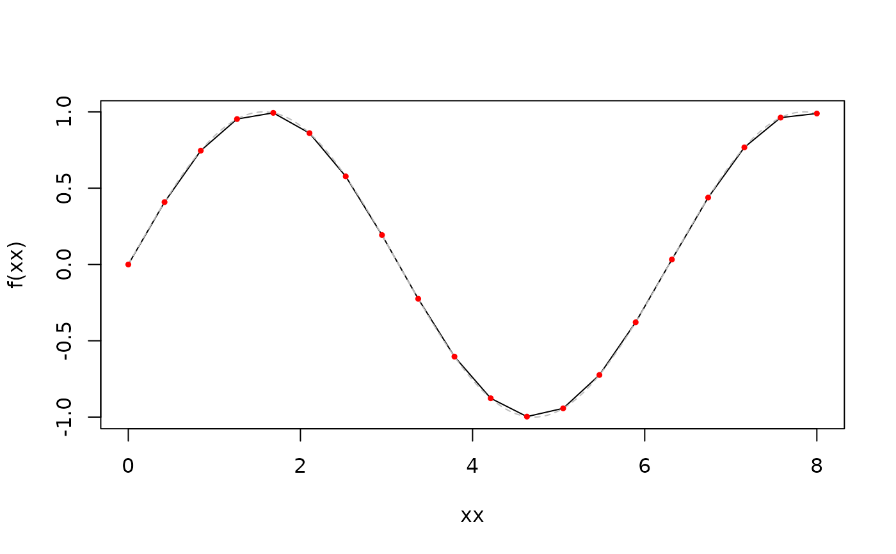
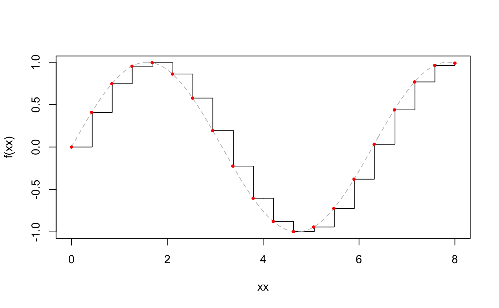
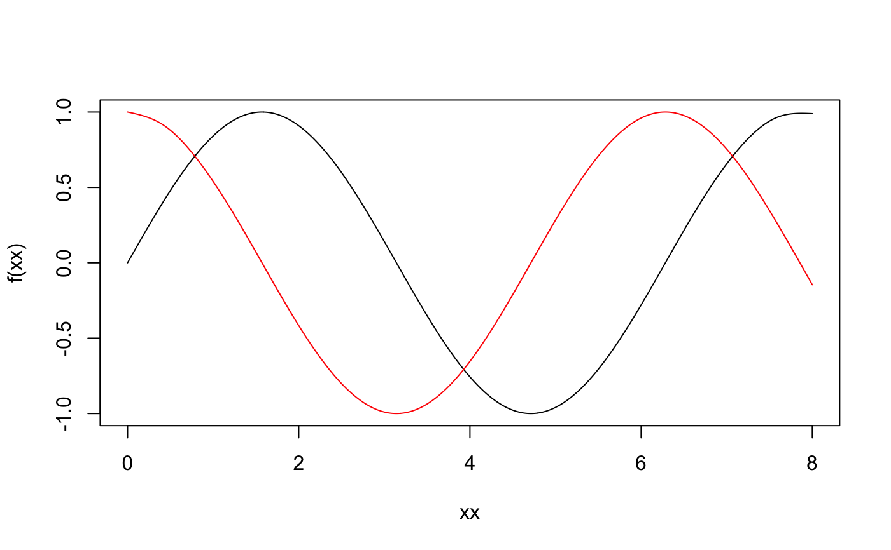

Create an interpolation function, using the same implementation as
would be available from C code. This will give very similar
answers to R's splinefun function. This is not the
primary intended use of the package, which is mostly designed for
use from C/C++. This function primarily exists for testing this
package, and for exploring the interface without writing C code.
interpolation_function(x, y, type, scalar = FALSE, fail_on_extrapolate = FALSE)Independent variable
Dependent variable
Character string indicating the interpolation type ("constant", "linear" or "spline").
Return a function that will compute only a single
x input at a time. This is more similar to the C
interface and is equivalent to dropping the first dimension of
the output.
Logical, indicating if extrapolation should cause an failure (rather than an NA value)
A function that can be used to interpolate the function(s)
defined by x and y to new values of x.
# Some data to interpolate
x <- seq(0, 8, length.out = 20)
y <- sin(x)
xx <- seq(min(x), max(x), length.out = 500)
# Spline interpolation
f <- cinterpolate::interpolation_function(x, y, "spline")
plot(f(xx) ~ xx, type = "l")
lines(sin(xx) ~ xx, col = "grey", lty = 2)
points(y ~ x, col = "red", pch = 19, cex = 0.5)

# Linear interpolation
f <- cinterpolate::interpolation_function(x, y, "linear")
plot(f(xx) ~ xx, type = "l")
lines(sin(xx) ~ xx, col = "grey", lty = 2)
points(y ~ x, col = "red", pch = 19, cex = 0.5)

# Piecewise constant interpolation
f <- cinterpolate::interpolation_function(x, y, "constant")
plot(f(xx) ~ xx, type = "s")
lines(sin(xx) ~ xx, col = "grey", lty = 2)
points(y ~ x, col = "red", pch = 19, cex = 0.5)

# Multiple series can be interpolated at once by providing a
# matrix for 'y'. Each series is interpolated independently but
# simultaneously.
y <- cbind(sin(x), cos(x))
f <- cinterpolate::interpolation_function(x, y, "spline")
matplot(xx, f(xx), type = "l", lty = 1)
